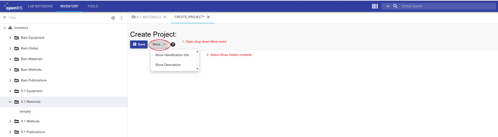
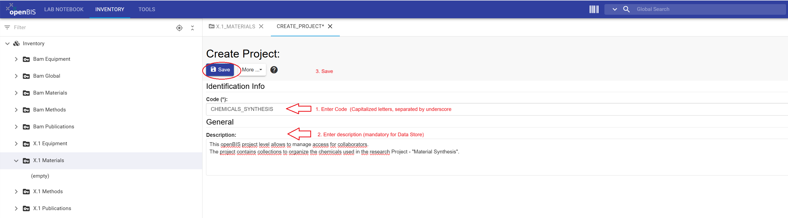

This tutorial uses a generic example to show how to upload data and document the Experimental Steps that describe the corresponding datasets. Consistent documentation in the ELN supports traceability, discoverability, reusability, and reproducibility of research data.
What you will learn
How to upload research data to the Electronic Lab Notebook (ELN) using the graphical user interface (GUI) of the openBIS Data Store
How to document and describe datasets by registering experimental steps in the ELN
Manage Projects, Collections, Objects and datasets
Use templates and metadata
Edit and delete objects
Search and filter ELN entries
Before you begin
This tutorial requires no prior experience with openBIS and is designed for openBIS version 20.10.12.
You need to have access in the openBIS instance of the BAM Data Store (access restricted to BAM employees with VPN connection).
If you encounter problems, contact the Data Store team.
Download Datasets
Datasets are needed to complete exercises described in step 7.
Download the file 'Parameter1_Macroscopic.zip' and keep it as zip file, do not uncompress it.
Download following dataset, you will need the individual files.
Key concepts
Research workflow
Begin by drawing the flow diagram that represents the logical workflow used to generate research data.
In this workflow, the Experimental Steps, describing how datasets are generated, are represented as the “things you do” (yellow boxes). The research data is represented as datasets (red boxes). Every dataset is attached to an experimental step.
Figure 1: Research workflow represented in this tutorial.
openBIS and Data Store core Data Model
This tutorial uses the core openBIS data model, which consists of five hierarchically structured levels: Space / Project / Collection / Object / Dataset applied to three compartments of the Data Store (BAM Inventory, FB Inventory and ELN).
In this tutorial, you will work with the Electronic Laboratory Notebook (ELN).
Important Note:
Starting with openBIS version 20.10.12, the core data model was extended to include folders and subfolders. Although this feature may provide additional flexibility and resemble the folder structures
commonly used in Windows file systems, the Data Store team recommends primarily using the core openBIS data model (Project → Collection → Object → Dataset) instead of organizing data through folders.
This recommendation is based on the following advantages:
Maintaining a lean and clear organization of objects within collections.
Keeping the left-hand Lab Notebook menu concise and easier to navigate.
Improving the consistency and discoverability of research data.
Supporting standardized and scalable data organization across projects and divisions.
Encouraging the use of metadata and object relationships instead of file-system-like structures.
For most research workflows, representing data in Collections and connecting related objects (for example Experimental Steps) using parent–child relationships provides a more robust and sustainable approach than using nested folder structures.
In openBIS everything is represented as objects. In this tutorial, the project named 'Material Synthesis' comprises five collections ('Synthesis,Treatment non-destructive, Paremeter 1 and Parameter 2, Parameter 2 Analysis'),
which contains the experimental steps done to generate the research data / Datasets.
Figure 2: All Experimental Steps are represented as objects. These are organized in several collections within the openBIS-project named 'Material Synthesis' in the ELN.
Electronic Lab Notebook (ELN)
In the Lab Notebook section, each user has a personal workspace (Space in openBIS) for organizing research projects, experiments, simulations, and other activities that generate research data.
Within a Project in openBIS, research activities can be documented as Experimental Steps, with datasets attached directly to the corresponding Experimental Step that describes how the data was generated. Experimental Steps can also be linked
to other Experimental Steps and to related entities, such as chemicals, instruments, software, and samples. These connections are established through parent–child relationships, which help document complete research workflows and data provenance.
Experimental Steps should also be linked to one another and to all related elements used to carry them out, such as chemicals, instruments, and software. These connections are established through user-defined parent-child relationships.
In this tutorial, you will learn how to register Experimental Steps, organize them within Collections, and upload datasets in the Electronic Laboratory Notebook.
Exercises
This tutorial example demonstrates a simplified workflow for the synthesis and characterization of a material before and after a non-destructive chemical treatment. The example has been intentionally simplified so that you can focus on learning how to use the openBIS Data Store rather than on the scientific details of the workflow.
This tutorial will guide you through following Steps:
1: Register a Project.
2: Register a Collection of Experimental Steps.
3: Register Experimental Steps.
4: Register Experimental Steps using Templates.
5: Edit Collections of Objects.
6: Register additional Experimental Steps using Templates.
7: Upload Data.
8: Filter and Search.
Figure 3: The tutorial example is organized as an openBIS Project named Material Synthesis represented in the Lab Notebook within the user´s Home Space (for example, X.1 Ebamuser) and you will be doing it in your own Home Space.
The project Material Synthesis comprises five collections: Synthesis, Treatment non-destructive, Parameter 1, Parameter 2 and Parameter 2 Analysis. The Collections contain experimental
steps to which datasets (not visible in the left-hand menu) are attached.
Step 1: Register a Project
Create an openBIS-project in the Lab Notebook to represent the research project Material Synthesis.
Instructions for registering a Project:
Click the upper LAB NOTEBOOK tab in the upper navigation bar.
In the left-hand menu, open the Lab Notebook drop-down menu to select Home Space.
Click + Project to open the new project form.
Enter the project information: Code and Description.
Code: Material_Synthesis.
Description: This tutorial project demonstrates a simplified workflow for the synthesis and characterization of a material within openBIS. The experimental descriptions, metadata, and datasets were generated using AI and represent synthetic example data created solely for training and demonstration purposes.
Although the content has been reviewed for consistency and usability within the tutorial, it has not been validated for scientific accuracy and should not be considered scientifically reliable or reproducible.
Review all entries and click Save.
Figure 4: The LAB NOTEBOOK tab provides access to the Lab Notebook navigation menu on the left-hand side. Select the Home Space to display the available tabs in the central panel and access
its contents.
General information
This section provides guidance for completing the project form.
Code requirements
Mandatory fields in openBIS are marked with an asterisk (*).
Codes should be meaningful, in English, and between 3 and 30 characters.
A code cannot be modified or reused.
Description requirements
Mandatory for BAM Data Store.
Should contain enough detail to be understandable to people outside the group.
Should follow the format: English//German.
Should contain 2 to 50 words.
Warning: If the Code field is not displayed and you encounter a white page, click the More drop-down menu and select Show Identification Info.

Figure 5: The More drop-down menu provides access to Show Identification Info, which displays the Code(*) the Code (*) and other identification properties.

Figure 6: Enter Code (*) (mandatory in openBIS) and a Description (Mandatory for Data Store). Review the entries and Save.
Warning: Once a project has been saved, its project code cannot be modified or reused within the same openBIS instance. To delete a project, select
it in the left-hand menu, open the More drop-down menu, and select Delete. A project can only be deleted if it is empty. Therefore, all collections within the project
must be deleted first before the project itself can be deleted.
Figure 7: The new project is displayed in the left-hand menu under Home Space.
CONGRATULATIONS!!, you have created your first openBIS project.
General information (This is not an exercise)
Access management in openBIS is only possible at the Space and Project levels. Spaces are created by the Data Store team upon request and only when justified by specific organizational or access-control requirements.
For collaborative work—whether with colleagues within your division or across different BAM divisions (for example, for service-data)—it is recommended to organize data within dedicated Projects and manage access at the project level. Permissions assigned to a project are automatically inherited by all underlying collections, objects, and datasets.
Access can be granted to individual users or groups by assigning one of the available project roles, such as Observer, User, or Admin.
Each role provides a different set of permissions. For detailed information see, roles and rights set per default at the Data Store..
The following section demonstrates how to manage project access in openBIS.
Access Management at the Project Level
Select the relevant project in the left-hand menu.
Open the More drop-down menu.
Select manage access.
Assign Role (Observer, User, or Admin).
Specify whether the role should be granted to a Group (Division number) or User (BAM user name, all with non-capitalized letters).
Review the access settings and Save the changes.
Note: Changes to project permissions apply to all collections, objects, and datasets contained within the project. This ensures consistent access control throughout the project structure.
Step 2: Register Collections of Experimental Steps
A project can contain multiple collections that help organize Experimental Steps, measurements, and other research activities that generate data. Collections provide a logical structure for grouping
related work within a project and facilitate navigation, data management, and data retrieval.
Instructions for Creating a Collection:
In the left-hand navigation menu, select the project you created in Step 1: Material Synthesis.
Click + Other.
From the drop-down menu, Select Collection.
Leave autogenerated Code(*) unchanged.
Enter a meaningful Name. In this tutorial Name: Synthesis.
Leave Default object type empty.
Select List view as the Default collection view.
Review all entries and click Save.
Figure 8: Select the Material Synthesis project in the left-hand navigation menu and click + Other to create a new collection.Figure 9: In the Select Collection type window, choose Collection.Figure 10: Leave the auto generated Code(*) unchanged and enter a meaningful Name. In this tutorial: Synthesis.
Leave Default object type empty and select select List view as the Default collection view.
Warning: Collections are containers to organize objects within a project and can contain one or more object types. Although it is technically possible to store
different object types within the same collection, it is often more intuitive and easier to manage when related objects or objects of the same type are grouped together.
Objects can also be registered outside collections by using openBIS folders. However, the Data Store recommends organizing objects within collections whenever possible.
This approach simplifies navigation, supports a consistent data structure, and allows you to take advantage of the FILTERS tab, which is available when viewing a collection
and can help you efficiently search and organize objects.
CONGRATULATIONS!!, you have created your first collection.
Now you can create additional collections to complete the exercises of this tutorial
Instructions for creating additional collections:
Follow the instructions described in Step 2 (1 to 8) and register each of the following four collections individually.
Values for the Tutorial Example
You can copy and paste the following collection names:
Treatment non-destructive
Structure_TEM
Parameter 1
Parameter 2
Figure 11: Once successfully saved, the newly registered collections are displayed under the correspondent Project (Material Synthesis) in the left-hand navigation menu.Figure 12: To change the display order of collections, localize the mouse over the Material Synthesis project, open the context menu and select Change sorting.Figure 13: Select the desired sorting option, for example Registration Date Ascending, to display collections in chronological order based on their registration date.
CONGRATULATIONS!!, you have created a total of five collections to organize Experimental Steps.
Any research activity that generates data- such as experiments, measurements, simulations or analyses- can be represented in openBIS as an Experimental Step.
This generic Object Type includes standard metadata field (properties), suchs as Start Date, Experimental goals and Description that uniquely identify and describe an Experimental Step.
Users can define custom properties and controlled vocabularies through the openBIS Masterdata definition workflow defined for the Data Store. For more information visit the Data Store wiki.
In this tutorial, we will use the predefined metadata of the generic Object Type Experimental Step to demonstrate how experimental activities are
represented and documented in the ELN.
Instructions for registering Experimental Steps:
In the left-hand menu, navigate to the collection you want to use (Synthesis).
Open the More drop-down menu and select New Object.
Click Select an object type.
Start typing the Object Type name. (for example, exp) or scroll through the list and select Experimental Step.
In the New Experimental Step form, complete the fields displayed in the Identification Info section.
Enter the Material Demo 001 in the Name field.
Complete any mandatory (*) and additional relevant properties
Review all entries and click Save.
General information
This section provides guidance for completing the Experimental Step form.
The Code field is mandatory (*) and is automatically generated by the system. In most cases, it is recommended to leave the generated code unchanged. If you choose to modify it, ensure that the naming convention remains consistent.
The Name of an Experimental Steps should be meaningful and descriptive, as it will be displayed in collections and can be used to search for objects within the ELN.
The remaining fields and properties should be completed with the relevant experimental information. Only fields marked with an asterisk (*) are mandatory and must be filled in before the Experimental Step can be saved.
After registration, Experimental Steps can be edited and updated as needed.
Warning:
If the Code field is not displayed and you encounter a white page, click the More drop-down menu and select Show Identification Info.
Figure 14: Select the Synthesis collection in the left-hand menu. Then open the More drop-downmenu and choose New Object to create a new Experimental Step.Figure 15: In the Select an object type window, choose Experimental Step.Figure 16: Leave the automatically generated Code (*) unchanged, enter Material Demo 001 in the Name field, complete any other mandatory (*) properties, and click Save
to register the new Experimental Step.
CONGRATULATIONS!!, you have created your first Experimental Step named Material Demo 001.
Step 4: Register Experimental Steps using Templates
Experimental Steps may require extensive metadata to fully describe the datasets generated. To standardize this information and simplify
the registration of similar Experimental Steps, reusable templates can be created and shared within a division.
Templates are particurly useful for repetitive workflows in which experimental conditions remain the same or require minor modifications.
They help ensure consistency, reduce manual data entry, and improve the efficiency of experimental documentation.
Instructions for registering Experimental Steps using Templates:
In the left-hand menu, navigate to the collection you want to use (Synthesis).
Open the More drop-down menu and select New Object.
Click Select an object type.
Select Experimental Step.
Click on the Templates tab.
Select the template Material Synthesis.
Leave the option Merge current parents/children disabled.
Click Accept.
Leave the Code(*) unchanged and enter the name for the Experimental Step (Material Synthesis).
Enter the Start date and End date using the calendar selector. Entering a time is optional.
Scroll down to Comments section and enter a comment
Review all entries and click Save.
General information
This section provides guidance for the use of Templates.
Templates must first be created for a specific Object Type before they become available for selection within your division.
Because templates are part of the ELN settings and are visible to all members of a group/division or division, they can only be
created by users with 'Group Admin' rights. This role is typically assigned to Data Store Stewards (DSSt).
If you are unsure who is the Data Store steward in your division, contact your division lead or reach out to the Data Store team.
Warning:
Once an Experimental Step (or any other object) has been registered, a template cannot be applied retrospectively to modify it. Templates can only
be selected during the object creation process.
If the template you are using contains predefined (included none) parent-child relationships and your object already includes parent-child relationships that you want to preserve,
you should enable the Merge current parent-child relationships option. This is particularly important when registering an object based on another existing object,
as this process may automatically create parent-child relationships. A guide to this is provided in
Data Store - How to guide: Register sequential Experimental Steps
Figure 17: To register a new Object, select the collection called Synthesis, open the More drop-down menu and select 'New Object'.Figure 18: Then Select an object type called Experimental Step.Figure 19: Click on the Template tab and select the template Material Synthesis.Figure 20: Enter the Name of the Experimental Step (Material Synthesis), add any other mandatory (*) value, enter a comment and save.Figure 21: Registered Experimental Steps are displayed within the selected collection. Scroll horizontally to explore the available metadata fields and view the associated icons for Material Demo1
These icons provide quick access to actions and information related to the Experimental Step.
Warning:
Once you register an Experimental Step or any other object, it is not possible to apply a template retrospectively.
If the template you are using contains predefined parent-child relationships and you have already defined some parent-child relationships in your object that you wish to retain, you should enable
the “Merge current parent-child relationships” option. This can happen, for example, in Lab Notebook when you register an object based on another object, which automatically creates
a parent-child relationship. See Data Store Wiki article 'Register sequential Experimental Steps'
CONGRATULATIONS!!, You have created the Experimental Step “Material Demo1,” based on a template. This object is now enriched with more metadata in form of text, tables and contain a personalized
Comment. All the contents are searchable in the database, as we will see later in this tutorial.
When working with the Data Store, maintaining consistent naming conventions for all registered enttities- such as Projects, Collections, Objects, Datasets- is essential for ensuring clarity and helping users
maintain a clear overview of the stored information.
In the following excercises, you will learn how to edit Collections and Objects to resolve the following inconsistencies:
Rename the collection Structure TEM to Parameter 2 Analysis
Delete the object Material Demo 001
Exercise: Edit a collection
This section provides guidance on how to edit the name of an existing collection.
Instructions for editing collections names:
In the left-hand menu, navigate to the collection you want to edit Structure TEM.
Open the More drop-down menu and select Edit Collection.
Click on the edit tab.
Change the collection Name to Parameter 2 Analysis.
Review all entries and click Save.
If the updated collection name is not displayed immediately, refresh the page
Figure 22: To edit a collection, select it in the left-hand menu, open the More menu and choose Edit Collection.Figure 23: Click the Edit tab to modify the collection name.Figure 24: Update the collection name to Parameter 2 Analysis; review entries and Save
This section provides guidance on how to delete an object.
Instructions for deleting Objects:
In the left-hand menu, navigate to the collection that contains the object you want to delete. For this example, Synthesis.
Select the object you want to delete Material Demo 001.
Click on the DELETE tab.
Enter a Reason(*) for deletion field. This must be completed before you can continue.
Click Accept.
Confirm the deletion by clicking Accept again.
Verify that the Object has been deleted by returning to the Synthesis collection and confirming that Material Demo 001 is no longer listed.
Figure 25: To delete an object, navigate to the relevant collection, select the object (Material Demo 001) to delete and click on the DELETE tab.Figure 26: Enter a Reason for deletion in the mandatory Reason (*) field. Leave the option Delete also all descendants unchecked and click Accept.Figure 27: Review the deletion settings and click Accept to confirm the deletion.
CONGRATULATIONS!!, You have deleted sucessfully an object (Experimental Step).
When deleting an object, you also have the option to delete connected objects and attached datasets. If you only want to remove the selected object,
leave the option Delete also all descendant object(s) including their datasets unchecked.
Descendant objects are objects linked to the object being deleted through parent-child relationships. Depending of the workflow, these linked objects may represent earlier (parent) or later (child) objects of the research process.
A later tutorial will provide a more detailed explanation of parent-child relationships in openBIS and how they are used to make research workflows traceable.
General information: Revert deletions. (This is not an excercise)
Deleted Objects are moved to the 'Trashcan', where they can either be restored or permanently deleted.
To explore this functionality:
Click the TOOLS tab.
Select Trashcan.
Scroll to the right and open the Operations drop-down menu.
Figure 28: Open the TOOLS tab and select Trashcan. To view the available actions for a deleted object, select the object and open the Operations drop-down menu.Figure 29: Objects that are permanently deleted from the Trashcan are removed from the database and cannot be restored.
Warning:
Once an object is permanently deleted, it cannot be recovered. If the object has linked parent or child objects that you do not
want to remove, do not select the Dependencies option when choosing Delete Permanently.
if you delete a collection that contains objects, the system first deletes the objects within the collection and then deletes the collection
itself. These deletion actions can be reverted separately from the Trashcan, provided they have not been permanently deleted.
Step 6: Register additional Experimental Steps using Templates
As described in Step 4, you will now create five additional Experimental Steps using predefined templates. These Experimental Steps will be required to complete the remaining exercises in this tutorial.
Repeat the procedure below for each Experimental Step listed in the table. For each registration, select the corresponding Collection, Template, and Experimental Step Name.
Instructions for Registering Additional Experimental Steps:
In the left-hand menu, navigate to the appropiate collection.
Open the More drop-down menu and select New Object.
Click Select an object type.
Select Experimental Step.
Open the Templates tab.
Select the appropiate Template
Leave the Merge current parents/children option disabled
Click Accept.
Leave the Code field unchanged and enter the corresponding Experimental Step Name in the Name field.
Enter the Start date and the End date using the calendar selector. Entering a time is optional.
Scroll down to Comments and enter a comment (your choice)
Review all entries and click Save.
Values to use for each Experimental Step
Experimental Step
Collection Name
Template Name
Experimental Step Name
1
Treatment non-destructive
Chemical Treatment
Chemical Treatment
2
Parameter 1
Macrostructure Characterization
Macrostructure Characterization
3
Parameter 1
Macrostructure Characterization
Macrostructure Characterization TS
4
Parameter 2
Microstructure Characterization
Microstructure Characterization
5
Parameter 2 Analysis
Microstructure data analysis
Microstructure data analysis
Exercise: Get an overview of the registered Experimental Steps.
There are two ways to view the Experimental Steps you have registered:
- Open the correspondent collection from the left-hand menu, or
- Open the Project overview to display all registered objects in one place.
Instructions for viewing registered Experimental Steps:
In the left-hand menu, navigate to the project Material Synthesis, where you previously registered the objects.
Open the More drop-down menu and select Show Overview (if overview is not already displayed).
In the Objects section, you will see a list of all Experimental Steps you created.
Scroll horizontally (for example using the laptop trackpad) to the column named Experiment/Collection. This column displays the full path /Space/Project/Collection
indicating where each experiment is assigned and mapped in openBIS.
In the Registrator column, you will see your BAM username. Note that additional properties such as the Registration Date and the Modification Date
can be used to define queries, search for objects, or filter the database based on property values. You will learn more about the search and filering fuction later in this tutorial.
Figure 30: Navigate to Project, open the More menu and, if hidden, select Show Overview.Figure 31: In the project overview, scroll horizontally to explore Properties (columns) of the objects.
CONGRATULATIONS!!, You know now how to get an overview, you should see a total of five Experimental Steps (Material Synthesis, created in Step 4) and four
additional Experimental Steps listed above. These Objects will be used in a subsequent tutorial to demonstrate relationships between them and the organization of research workflows in the ELN.
The Data Store recommends to attaching datasets directly to Experimental Steps that describe how the data was generated. In openBIS, uploaded files are stored as Datasets.
Because openBIS is format-agnostic, datasets can contain files of any type or format.
Small and medium-sized files (up to several gigabytes) can be uploaded directly through the web interface. For very large datasets (terabyte scale), please contact the Data Store team before uploading. Large data transfers should
be performed incrementally using dedicated scripts to ensure stable Data Store performance and reliable data transfer.
Instructions for uploading data from a ZIP file:
In the left-hand menu, navigate to the Experimental Step Parameter 1.
Select the Experimental Step Macrostructure Characterization.
Click on the +Dataset tab.
Select Raw Data as Dataset Type.
Enter Parameter 1 raw as the Dataset name.
In the Comments field enter Synthetic example images for demo purpose.
Click Select files to upload.
Select the zip file Parameter1_Marcoscopic.zip.
Wait until the green progress bar indicates that the upload has completed sucessfully.
Enable the option Uncompress before import when uploading the Zip file.
Review all entries and Save.
Important Note:
The Data Store serves as centralized storage for research data, metadata, and the relationships between them. Like most software platforms, openBIS cannot
directly open, edit or process all file formats.
To continue working with uploaded data:
Download the dataset from the Data Store.
Process or modify the data using appropriate software tools.
Upload the updated version as a new dataset and remember to document the changes in a new Experimental Step, if required to maintain the traceability of the research workflow.
If your workflow uses a version control system such as GitHub, the Data Store recommends the following approach:
Store raw data in the Data Store.
You can include links to relevant GitHub repositories in the Comment Log field or another designated metadata field within the Experimental Step.
Ensure that your division follows a consistent documentation approach to make information easier to locate and reuse.
Figure 32: Navigate to the Parameter 1 collection, and select the Macrostructure Characterization Experimental Step to which the dataset will be attached.Figure 33: Open the +Dataset tab to register a new dataset.Figure 34: Enter dataset information, including Dataset Type, Name and Comments. Upload the dataset file and wait for the upload to complete.Figure 35: Review the entries and Save to register the dataset.
Confirm Data Upload
To verify that the dataset has been uploaded successfully, navigate to the Parameter 1 collection in the left-hand menu and open the Macrostructure Characterization Experimental Step.
.
Figure 36: uploaded datasets are displayed within the corresponding Experimental step. To view them, navigate to the relevant collection and open the Experimental step to which the dataset was uploaded.
CONGRATULATIONS!!, You have uploaded data from a zip file to your Experimental Step 'Macrostructure Characterization' located in the 'Parameter 1' collection.
Exercise: Uploading data to the ELN preview.
This exercise demonstrates how to attach an image as a dataset and display it in the Preview section of an Experimental Step within the ELN.
Instructions for attaching an image to the ELN preview:
In the left-hand menu, navigate to Parameter 1 collection.
Select the Experimental Step Macrostructure Characterization.
Click the +Dataset tab.
Select ELN Preview as Data set Type.
Enter Synthetic image1 as the Dataset Name.
In the Comments field, enter: This is an artificial example created for demonstration testing.
Click Select files to upload.
Select the image file Synthetic-image1.png and wait until the green progress bar indicates that the upload has completed sucessfully.
Review all entries and Save
Figure 37: Navigate to the Parameter 1 collection and open the Macrostructure Characterization Experimental Step where the image dataset will be uploaded.Figure 38: Click the +Dataset tab to create a new dataset entry.Figure 39: Enter the dataset information (name and comments), upload the image file and Save.
Confirm Data Upload
To verify that the image dataset has been uploaded successfully and is displayed in the ELN preview, navigate to the Parameter 1 collection in the left-hand menu and open the Macrostructure Characterization Experimental Step.
Figure 40: Uploaded datasets are displayed within the corresponding Experimental Step. Datasets of type ELN Preview are shown directly in the Preview section, allowing images to be viewed without downloading the file.
CONGRATULATIONS!!, You have uploaded an image and display it in the preview of the experimental step.
Exercise: Uploading an attachment to describe an uploaded image.
This exercise demonstrates how to upload a dataset of type attachment. In this example, you will upload a README file that provides additional information about the image previously added to the Experimental Step.
Instructions for uploading a README file:
In the left-hand menu, navigate to the Parameter 1 collection
Select the Experimental Step Macrostructure Characterization
Click on the +Dataset tab
Select Attachment as Data set Type.
Enter README Synthetic image1 as the Dataset name
In the Comments field, enter: This is a README file to explain synthetic image1.
Click Select files to upload
Select README file README-Synthetic-image1.txt and wait until the green progress bar indicates that the upload is completed.
Review all entries and Save
Figure 41: All datasets are uploaded using the same workflow. The primary difference is the selected Data Set Type. In this example, the dataset type is Attachment.
Confirm Data Upload
To verify that the README file was uploaded successfully, navigate to the Parameter 1 collection and open the Macrostructure Characterization Experimental Step.
CONGRATULATIONS!!, You have uploaded a dataset of type Attachment containing a README file that documents the
previously uploaded image1.
Important Note:
The Data Store recommends primarily to use the data set types Raw data, Attachment or ELN Preview. Other dataset types currently available in the drop-down menu
may be deprecated in future versions of openBIS and future releases of the Data Store data model.
Datasets are not displayed directly in the Project or Collection overview. To view uploaded datasets, open the corresponding Experimental Step to which the datasets were attached.
Collections can be filtered to display specific properties and to restrict the displayed objects based on specific property values.
This is one of the advantages of organizing objects, such as Experimental Steps, within collections.
Filtering helps users:
focus on relevant information,
simplify data navigation
quickly locate specific objects within large collections.
General information
To filter objects within a collection:
Select the relevant collection from the left-hand menu
Click on the COLUMNS tab
Select the properties you want to display in the overview table
Use the filter options available in each column to display only objects that match specific property values.
Adjust the filter criteria as needed to refine the results.
Figure 42: Use the COLUMNS tab to select which object properties are displayed in the collection overview table.Figure 43: Apply filters to individual columns to display only objects that match specific property values. This allows you
to quickly locate objects within large collections.
Exercise: Advanced search
This exercise demonstrates how to create an Advanced Search query. Advanced Search allows you to combine multiple search criteria to
locate specific objects or datasets stored in openBIS.
Instructions for Creating an Advanced Search Query
Click the TOOLS tab
Click Advanced Search
Select Search For: Dataset
Select the Using operator AND
Define the first search criterion:
- Field Type: All
- Field Value: synthetic
Add a second search criterion by clicking the + icon:
- Select Field Value: 2026-04-17. Use the calendar icon to enter date
Add third query criterion, by clicking the + icon:
- Select Field Type: Property
- Select Field Name: Registrator
- Select Comparator Operator: thatEqualsUserId
- Select Field Value: your first last and name, for example "Elena Mueller".
Click on the blue search icon (it looks like a magnifying glass) to execute the query
Review the search results displayed below the query form.
To save the query, click save
Enter Datasets-synthetic as the query name and click Save again.
Figure 44: Configure the search criteria and execute the advanced Search query.Figure 45: Save the configured query for future use.
Reuse a saved search
Instructions for reusing saved query
Click the TOOLS tab
Select Advanced Search.
Choose the saved query Datasets-synthetic from the drop-down menu.
Click the search icon to execute the query and display the results.
Figure 46: Saved searches are stored in the ELN settings of your group. Open Advanced Search, select a saved query, and click the Search icon to reuse it.
CONGRATULATIONS!!, You know how to filter objects within a collection, create advanced search queries, save queries, and reuse saved searches in the ELN.
After completing these steps, you should be able to structure a research project in the Lab Notebook, document Experimental Steps, and upload datasets in a way that supports traceability and reuse.